Drag the arrow on the timeline to explore the number of companies closing down in
various industries.
Drag the arrow on the timeline to explore the number of companies closing down in
various industries.

 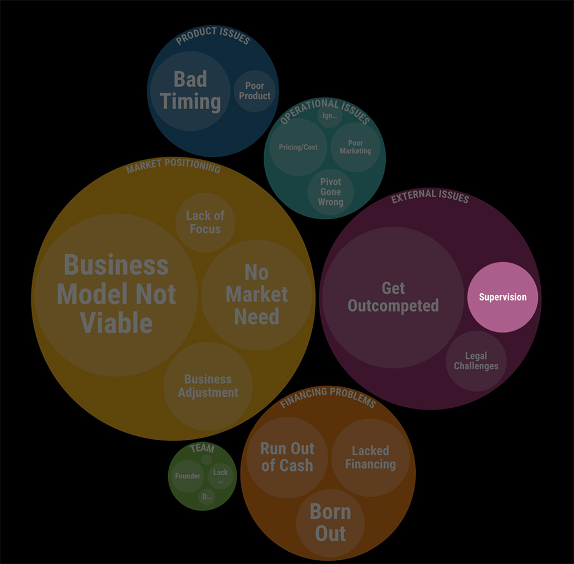
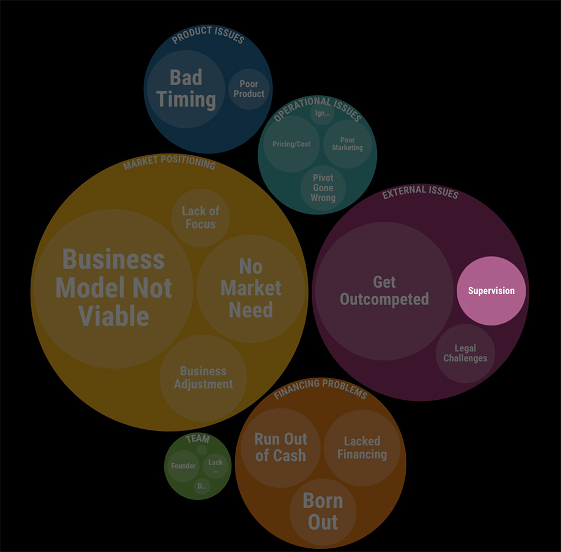

 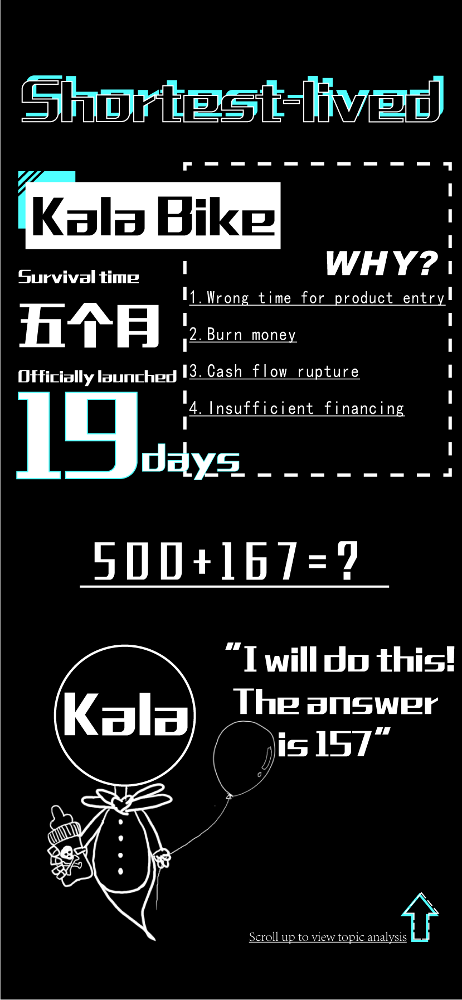
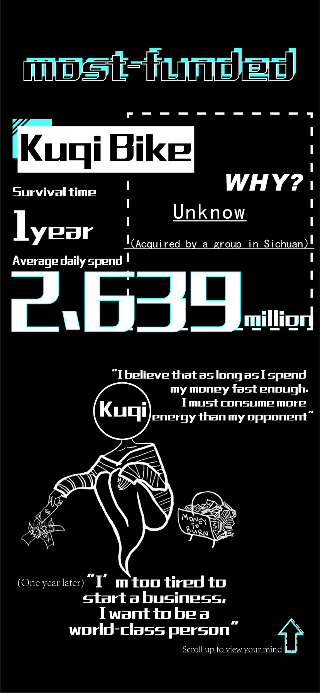
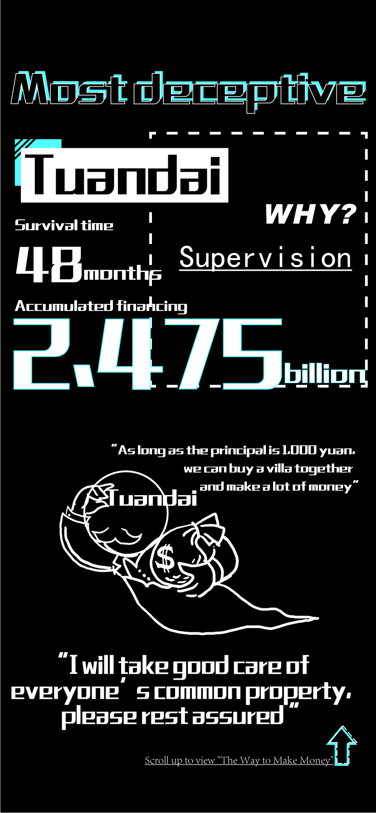
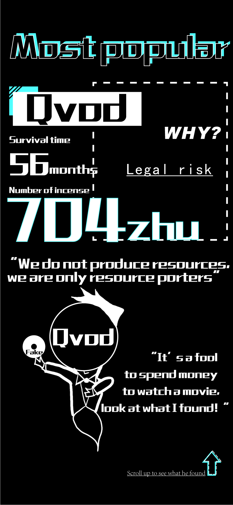
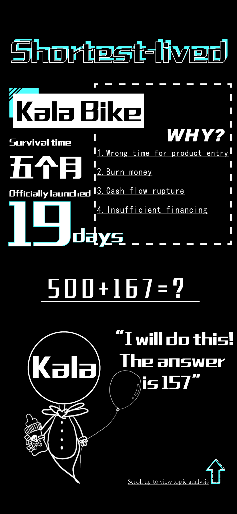
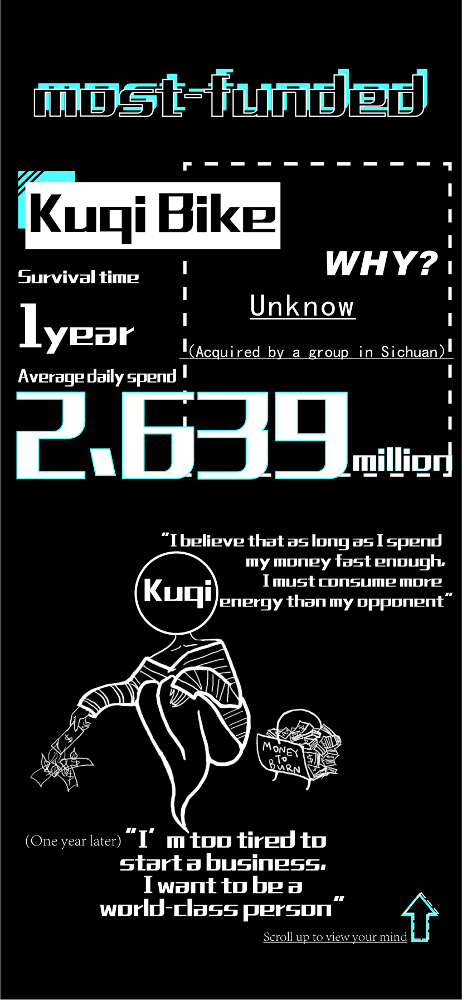
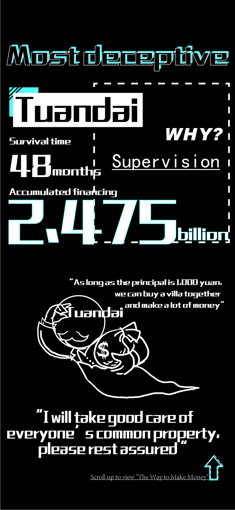
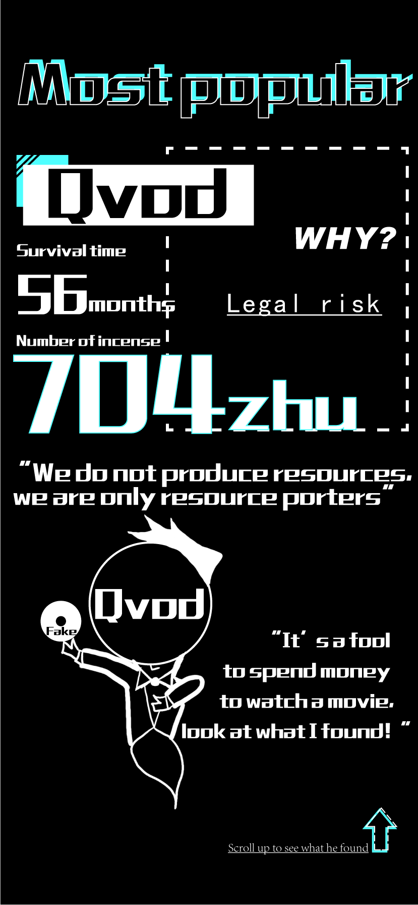
Countless startups fail every year, so why do they fail?
The reasons for failures are divided into 6 categories,
which are sorted by the number of startup failures. Market
Positioning / External Issues /
Financing Problems / Product Issues / Operational
Issues / Team Issues .
These 6 categories can be subdivided into 20 sub-categories:
- Business Model Not Viable / No Market Need/ Adjustment of Business Scope / Lack of Focus
- Get Outcompeted / Penalties by governments / Legal Challenges
- Run Out of Cash / Lacked Financing / Born Out
- Bad Timing / Poor Product
- Pricing / Cost Issues / Poor Marketing / Pivot Gone Wrong / Ignored Customers
- Founder Issues / Lack of team ability / Lack of Passion / Disharmony on Investors
Business Model Not Viable - the "number one culprit" of numerous company failures
Among the causes of company failures in most industries, the most common cause of failures is "lack of business model". For example, 55.2% of companies in the health care industry failed because their business model are not viable, followed by Enterprise Service and Marketing Industry. 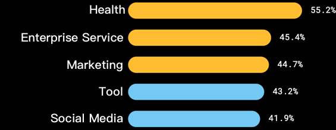While the number one culprit in most industries is the business model, there are two exceptions: Automotive & Transportation
Industry and Finance
Industry.
Industry Competition - Automotive & Transportation Industry
In Automotive & Transportation Industry, the most common cause of failues is "industry competition". Bike-sharing, for example, was once a popular field as a representative branch of the transportation industry. At that times, bike-sharing companies mushroomed, but it didn't take long for a large number of startups to close down in the competition. Even the bike-sharing giant, ofo, was not spared. Penalties by Governments - Choking the Finance Industry
In Finance Industry, the most common cause of failues is penalties by governments. A large number of the finance companies are online lending companies. A series of scandals, such as the 'naked loans' that force female students to bare all in return for more cash, have revealed the chaos in the online lending industry and demonstrated the need for Penalties by governments. This is why penalties by governments has become the most common cause of failures in the finance industry.
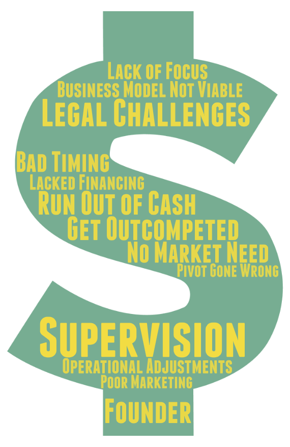
Now, let's change a lens to view startup failures. Do the causes of failures vary by funding round?
As you can see from the graph, the number of failures decreases from "No Funding" to "Series C".
The No.1 killer for companies that have not yet received investment and for angel
rounds is market positioning, while in Series A and B the No.1 killer becomes
external issues.
This indicates that as a company grows, team-building() becomes more and more important. Although this issue can be easily overlooked, it can hurt a startup fatally.
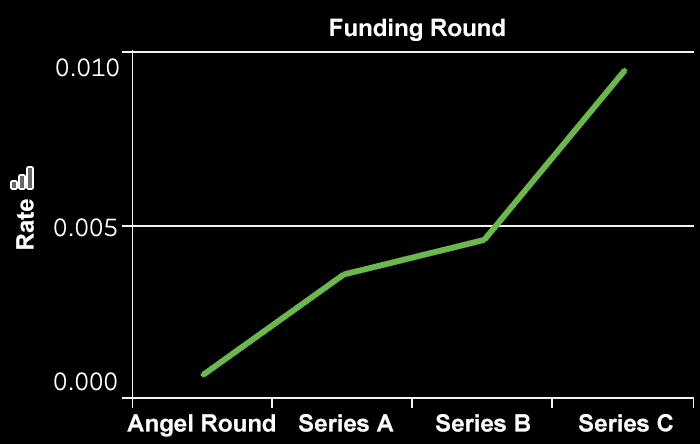
🏆 Award for Failed Startups
In a "fierce" race of startup failures, which companies have standed out? Here, we award five companies for "longest-lived", "shortest-lived", "most-funded", "most deceptive" and "most popular".WEBi English
Longest-lived
Lived for up to 21 years
- 1998 WEBi English was founded
- 11/2017 WEBi English ranked No. 1 in the language training industry during China's "Double 11" shopping festival.
- 10/2019 A number of WEBi English's stores ceased operations and were revealed to have defaulted on employee payroll.
WEBi English’s management has disappeared, leaving behind a large number of employees whose wages are in arrears and students who cannot be refunded their tuition fees. Why did this older generation, the 21-year-old former training giant, have fallen to this point?
According to a public apology letter issued by WEBi's founder, Gao Weiyu, WEBi's original financing plan was continuously postponed due to the continued deterioration of its performance and the impact of various recent negative public opinions, which brought about a break in its capital chain, resulting in the company's inability to continue normal operations. How did the former training giant fall to this point?
1. Pivot Gone Wrong
Webi was founded in 1998, at a time when China was in the midst of the first wave of foreign companies entering the country after the reform and opening up and the fever of going abroad, and WEBi seized the great market of adult English training. However, more than two decades later, China's society has placed a high priority on English and people have been learning English since they were children, leading to a significant shrinkage of the adult English training market, which has naturally created a great obstacle to the development of Webi, which focuses on adult English education.
2. Blind expansion leads to running out of cash
WEBi is also suspected of inducing trainees to use online loans to pay tuition fees in one lump sum, and use the money to expand the store quickly, resulting in insufficient income, broken cash flow, and unsuccessful financing plans. Many students have used the Internet financial products recommended by WEBi, but now they are all empty. They are faced with the triple dilemma of not being able to attend classes, and having to pay back their loans every month. In the end, a 21-year-old company left the scene sadly with continuous negative public sentiment and debts to students.
Kala Bike
Shortest-lived
Survived only 19 days
- 10/2016 Kala's team is formed
- 02/2017 The Kala staff said that the company put 500 and 167 bicycles in two batches within one month, but only 157 vehicles were recovered, with a loss rate of 76.5%.
- 03/2017 Kala goes bankrupt
A sad history of shared bicycle entrepreneurship-closed in 19 days
Cala put 667 bikes in Putian City in 19 days, but lost most of them. Only 157 vehicles were recovered, with a loss rate of 76.5%. Faced with this situation, investors' full withdrawal of capital resulted in the company having to face bankruptcy.
"Professional manager" entrepreneurship that allows investors to manage the accounts is not desirable
The agreement signed by the founder of Cala and the investor is for the investor to manage the finances, and the founder does nothing. When the company is in crisis, investors can actually withdraw the full amount of investment money from the user’s deposit pool, and remove the financial staff and customer service staff. Such behavior not only directly leads to the bankruptcy of the company, but also transfers all the risk To the users. It is the "professional manager" entrepreneurship that makes Cala fall into such a passive position.
Kuqi Bike
Most-funded
Survived for 379 days, raised 1 billion, spent an average of 2.63 million per day
- 11/2016 Kuqi was founded
- 09/2017 Due to the fact that the deposit is difficult to refund, and many operating units have lost contact with the Industrial and Commercial Bureau, some areas have begun to clean up the their bikes.
- 12/2017 The Chinese Consumers Association published a document stating that as of December 11, there had been more than 210,000 complaints against Kuqi alone, involving more than 1 billion yuan.
- 07/2019 According to user complaints, on July 12, 2019, all three telephone lines showing deposit refunds announced by Kuqi had been shut down.
The bike-sharing industry has entered the cold winter, no natter how much money you burn
The break of the capital chain became the last straw that crushed Kuqi. Once upon a time, ofo has defeated many bike-sharing startups and small and medium-sized investors in competition in the industry, and now it has become lingering.
Like ofo, Kuqi is facing the dilemma that the deposit cannot be refunded. Complaints against Kuqi continued, involving a huge amount of 2.1 billion yuan. As one of the victims, I advise everyone that we should be cautious about similar deposit collection methods in the future.
The break of the capital chain became the last straw that crushed Kuqi. Once upon a time, ofo has defeated many bike-sharing startups and small and medium-sized investors in competition in the industry, and now it has become lingering.
Like ofo, Kuqi is facing the dilemma that the deposit cannot be refunded. Complaints against Kuqi continued, involving a huge amount of 2.1 billion yuan. As one of the victims, I advise everyone that we should be cautious about similar deposit collection methods in the future.
TuanDai
Most deceptive
Obtained 2.475 billion yuan in financing but fled with the money
- 07/2012 Tuandai.com put into use
- 09/2017 Tang Jun, founder and CEO of Tuandai.com, became the largest shareholder and actual controller of Guangyingxia, a listed company on the NEEQ.
- 03/2016 The cumulative trading volume of the platform is nearly 16 billion yuan, and the platform has more than 2.4 million registered investment users, earning more than 520 million yuan in income for investors.
- 03/2019 The Dongguan Public Security Bureau issued a notice that Tang and Zhang, the actual controllers of the group loan network, took the initiative to surrender to the Dongguan Public Security Bureau.
Tuandai.com has been filed for investigation on suspicion of illegally absorbing public
deposits, and Tang Jun has surrendered as the actual controller. It's like a dream of a young
CEO born in the 1985 with a net worth of over 100 million. His identity has changed dramatically
in a blink of an eye.
Investment is risky, and Internet finance needs more caution
The “authoritative” recommendation of Tuandai.com’s analysis is arrogant, and the “herd thinking” that others voted for has caused many people to fall into the “big pit”. The annualized rate of return for high novices is even more exciting. Therefore, in order to invest, we must deeply reflect and be vigilant at all times to make risk warnings. It is necessary to distinguish between blindly following investors and not believing in the "promises" of shorts. After fully understanding and in-depth analysis, invest in them. If there is no way to distinguish, it is recommended to avoid risks. At the same time, it should also promote the integration of Internet financial big data and credit reporting systems to establish a better social credit reporting system.
Investment is risky, and Internet finance needs more caution
The “authoritative” recommendation of Tuandai.com’s analysis is arrogant, and the “herd thinking” that others voted for has caused many people to fall into the “big pit”. The annualized rate of return for high novices is even more exciting. Therefore, in order to invest, we must deeply reflect and be vigilant at all times to make risk warnings. It is necessary to distinguish between blindly following investors and not believing in the "promises" of shorts. After fully understanding and in-depth analysis, invest in them. If there is no way to distinguish, it is recommended to avoid risks. At the same time, it should also promote the integration of Internet financial big data and credit reporting systems to establish a better social credit reporting system.
Qvod
Most popular
The most memorable company
- 12/2007 Shenzhen QVOD technology company was founded
- 01/2009 QVOD received millions of dollars in Series A investment from Softbank SAIF
- 2011 Qvod has become the player with the largest market share in China
- 09/2016 Gvod company and its executives were tried on suspicion of spreading obscene materials for profit, the founder Wang Xin was sentenced to 3 years and 6 months in prison
- 09/2018 Shenzhen Intermediate People's Court ruled that Qvod was liquidated, effective today
Qvod was once called "the youth of an otaku". It is the excuseable that Qvod is most remembered
by people.
Back then, Qvod'founder Wang Xin's "technological innocence" theory put forward in his defense was recognized
by most netizens, but it did not change the outcome. Qvod still lost the case and Wang Xin was
sentenced to 3 years and 6 months in prison.
Times have changed, and now we have all admitted that a company is obliged to be responsible for
the actions of users. Just like China’s ride-hailing giant Didi Chuxing must stand up and be
condemned for the murder case while using Didi’s car-pooling service. So although the collapse of Qvod is regrettable, it has its historical inevitability.